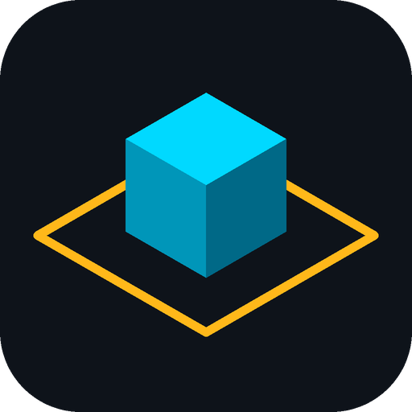
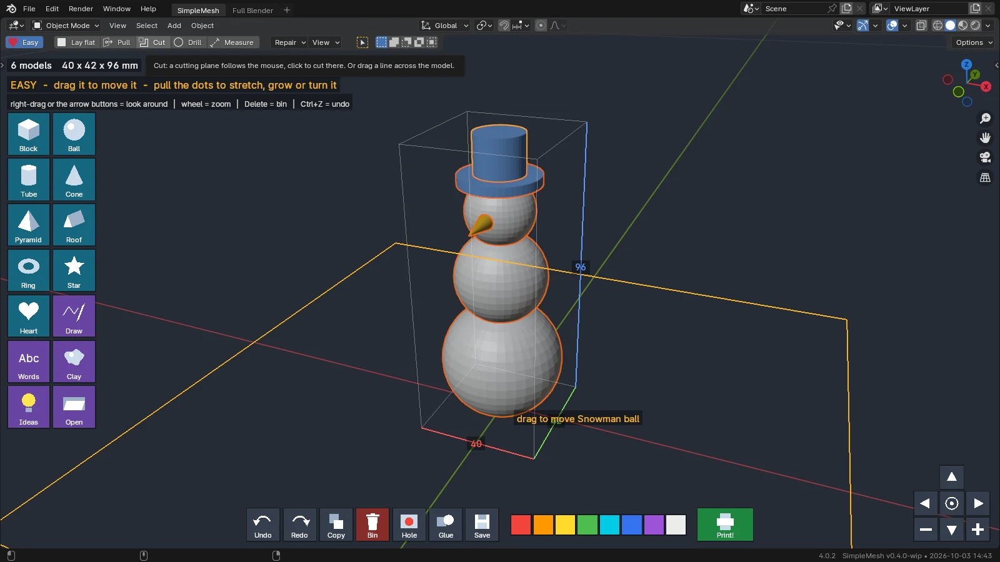
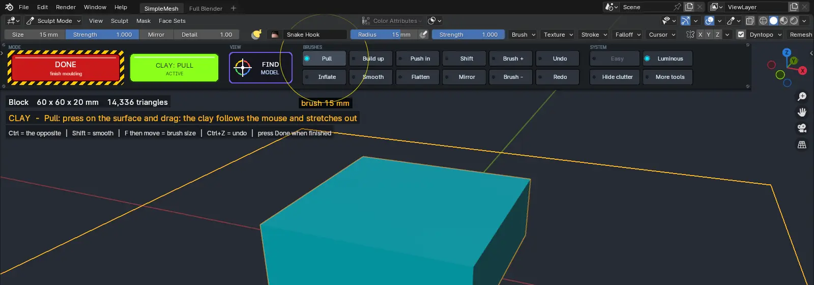
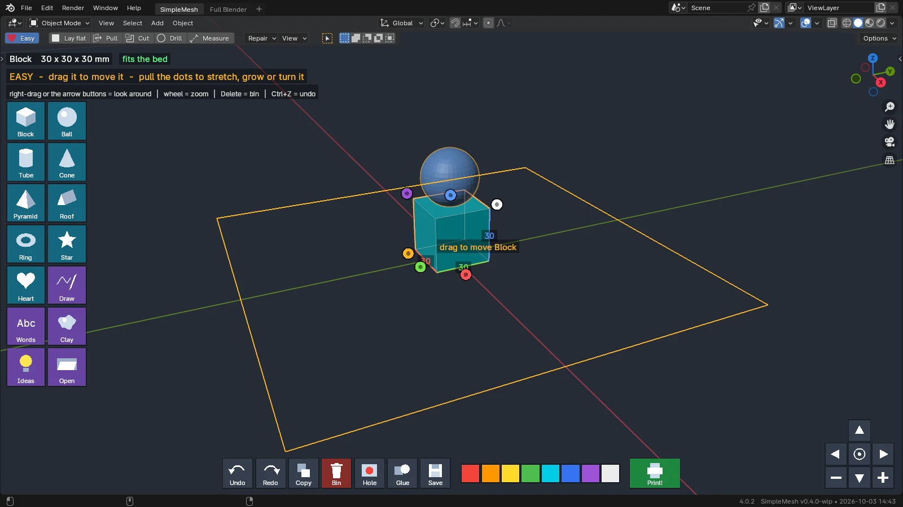
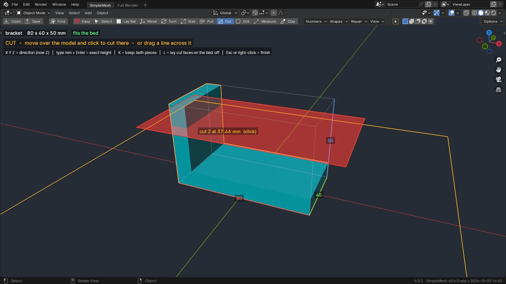
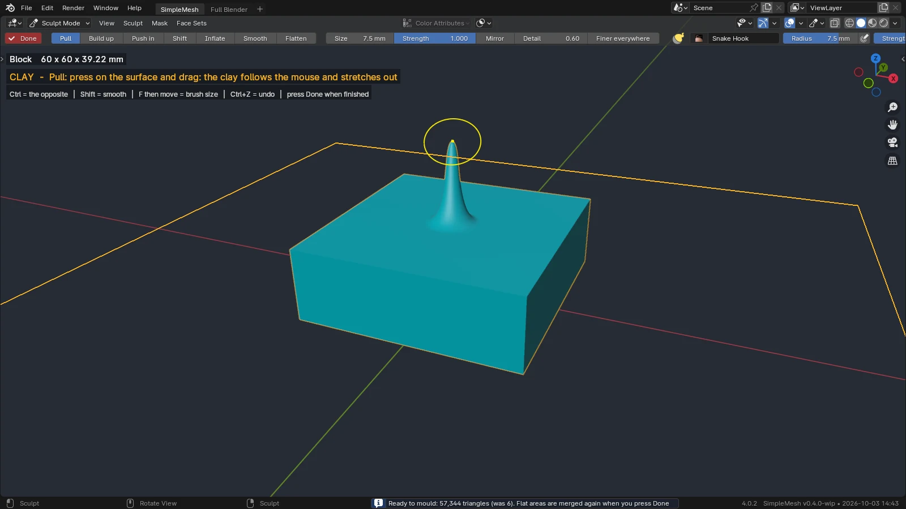
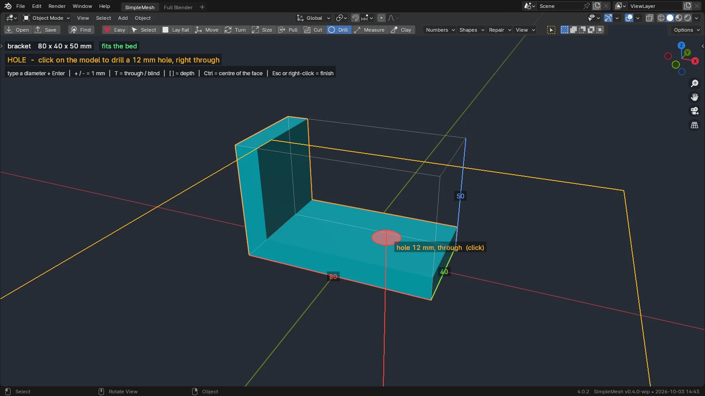
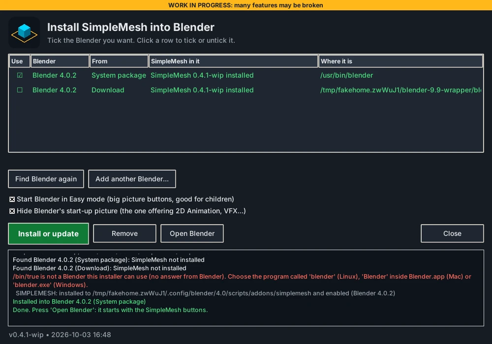

SimpleMesh
Blender made simple enough for a ten-year-old to build and print things, with exact STL tools for grown-ups underneath.
View on GitHub Releases
Real Blender 4.0.2 window on a virtual display, driven by a test script (simulated mouse and keys).
Big-button panel
Across the top, in every mode: a red button that does the next obvious thing, a badge that says what is active, Find, the tools, and keys for the look.Easy mode
Picture buttons. Click a shape, click where it goes. Shapes sit on each other. Pull the dots to stretch, grow and turn.Draw, Words, Ideas
Draw a loop and it becomes solid. Type your name for 3D letters. Or start from a snowman, rocket or robot.Print!
One button cuts the holes, glues the parts, repairs, checks the size and saves for the printer.Lay flat
Hover: the flat face lights up. Click: it sits on the bed. No Edit Mode.Move, Turn, Size
Drag the model. It stays on the bed. Or type the millimetres or degrees you want.Pull
Point at a flat face and drag it out or in. The part gets longer or shorter. Or type the millimetres.Clay
Mould it: pull, build up, push in, smooth. Seven brushes sized in millimetres; flat faces mould too.Cut
A plane follows the mouse, click to cut. Or drag a line across. Cuts are capped.Hole
A circle follows the mouse on the surface. Click to drill. Type the diameter.Right size from the start
Millimetre scene; oversized imports shrink to fit the bed and land centred. Size is always on screen. F finds the model.Looks
Luminous (dark, cyan) or Clean (light). Rainbow gives each model its own colour. Show the triangles. Hide clutter removes Blender's own rows.No scenery
One big 3D view. No timeline, outliner, camera or lights. A "Full Blender" tab is the way back.




What exists and what doesn't yet
| Exists and tested in a real Blender 4.0.2 window (scripted mouse) | Not there / not verified yet |
|---|---|
| Easy mode, as a scripted session (add, stack, dots, draw, ideas, glue, clay, print). Tools: Lay flat, Move, Turn, Size, Pull, Cut (click or line), Hole, Measure; Clay strokes; the panel's buttons; import auto-fit; F to find; pop-ups | A person, and especially a child, using it by hand; small screens; trackpads; big real STLs; the panel on any Blender other than 4.0.2 |
| Mesh work tested without a window on Blender 5.2.2: repair, weld, hole shapes, simplify, export | The window on Blender 3.x, 4.2+ and 5.x; macOS; Windows; connectors (pins, dovetails) |
Install
- Download the source and unzip it.
- Double-click Install SimpleMesh for your computer (Linux, Mac or Windows), or run
python3 install.py. - Tick your Blender in the list, press Install or update, then Open Blender. It starts in Easy mode.

Manual zip install and troubleshooting are in the README.